Overview
Templates are .html files used as email templates for sending notifications. Template files are uploaded in a directory for each project and those templates are available to be selected when creating notifications.
Creating a Template
To create a template, go to the Process Objects toolbox at the right side of the process map. Hover the pointer of the mouse over the + symbol next to Templates and click on Create.
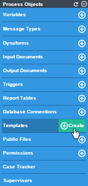
Enter the name of the template in the Filename field without the .html extension since it will be automatically added when saving the file (special characters, such as !·$%&(()=, are not accepted). Then, edit the content of the template using the WYSIWYG Html Editor. To learn more about the options of this editor, please see this page
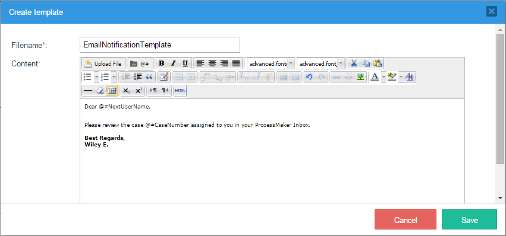
Note: Take into account that the source of the images inserted must refer to a URL with the http or https protocol. To load an image from a local resource, first upload it as a Public File and access it using this information.
To discard the creation of the new template, click on the Cancel button. To save the email template, click on the Save button. A flash message will confirm that it has been saved.
Managing Templates
To view the list of templates included in the process, click on the Templates option in the Process Objects toolbox.
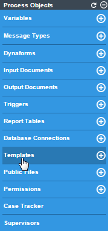
The list of templates will be displayed:
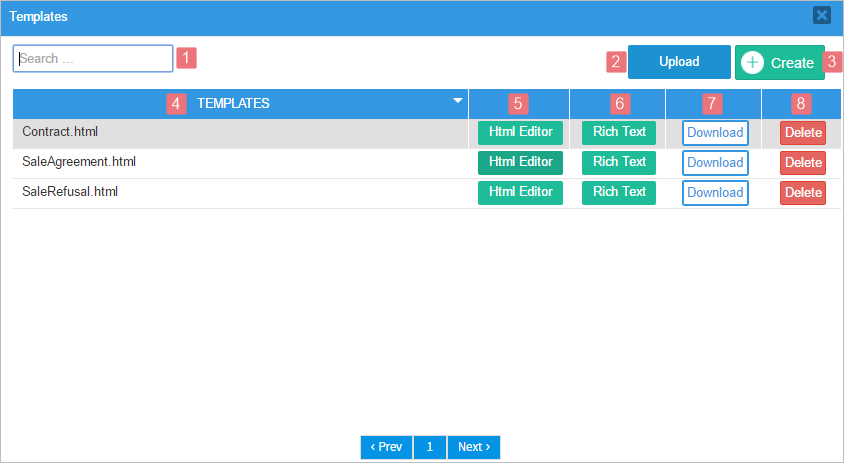
Where:
- Search: Enter the name of a template file into this field. This field has the autocomplete property, which lists all matching files.

- Upload: Click on this button to upload a file from your computer to the current ProcessMaker server. This option is useful if the template was created in an external HTML editor, such as DreamWeaver or BlueGriffon.

Remember that it is only possible to upload files with the .html extension. The files uploaded will be listed among the other templates created inside ProcessMaker, and it is also possible to modify their content with the editor.
- Create: Click on this button to open the Create Template window and create a new template. Remember not to write the file extension since it will be added automatically. Complete the information about the new template as described in this section.
- Templates: This column lists the names of the templates already created or uploaded in the process. Click on the arrow at the right side of the name of the column to sort the list in ascending or descending order. Notice that all the templates are shown with the .html file extension.
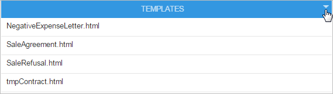
HTML Editor: Opens a plain editor to modify the contents of the selected template. A template created to be used as a routing screen template must be edited with this editor.
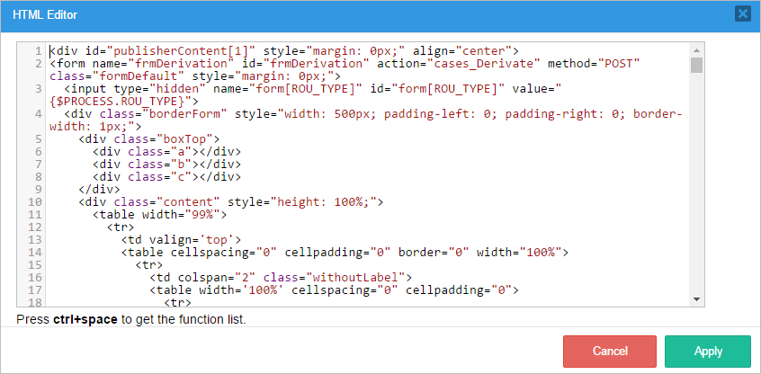
Rich Text: Opens a rich WYSIWYG editor to modify the contents of the selected template. Once done, click on Save to keep the changes made. Note that Emails use the base fonts provided by the WYSIWYG third party and do not require generating a document, as opposed to the Output Documents that can use the installed TTF files.
Do not use this option to edit the templates that will be assigned as routing screen templates because the original code may become corrupt due to certain limitations of the editor.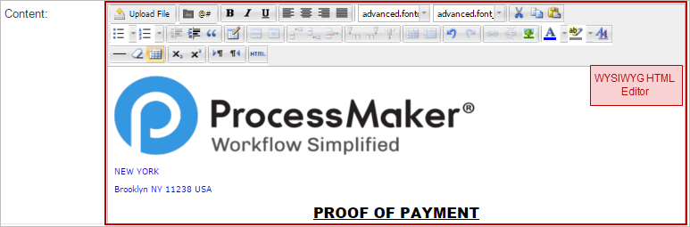
- Download: Click on this button to download the template to your computer. A flash message indicating that the file was downloaded successfully will appear at the top of the window and the file will be saved to the PC.
- Delete: Click on this button to delete the template. A message box opens to ask if the template should be deleted. Click on NO to close the message box and return to the Template list without deleting the template. Click on Yes to delete the template and a flash message will be shown at the top part of the process map confirming the deletion of the template.


HTML Templates
Email template files can be created inside ProcessMaker with the limited HTML editor or the helpful WYSIWYG editor. For greater creativity, create the template file with an external text editor and then upload it to ProcessMaker.
Variables
The template file will determine the body of the email message. This text can contain system and case variables and HTML tags. For example, let's use case variables retrieved from the information filled in a Dynaform:
Your leave request has been approved. Please find details below:
Date From: @@fromReq
Date To: @@toReq
Days Requested: @@daysReq
Once your leave period has ended, please do not forget to fill out a Leave Report upon returning.
Regards,
@@reqSupervisor
Case variables and system variables are described as follow:
@#VARIABLE-NAMEinserts the value of the variable without any changes.@@VARIABLE-NAMEinserts the value of the variable enclosed in "" (double quotation marks). Any quotation marks inside the value can be escaped with backslashes, such as"Don\'t say \"hello\"".
To know more about how variables are inserted in templates, review Editing Templates.
Note: If a template has a text with @q, the final document in the email displays the text replaced with an empty string between simple quotes. For example if you have john@qa.com, then the result is john''.com. As of ProcessMaker 3.3.13, it displays normally if you enter that value inside a variable.
Links
The email template can also contain links to easily open a case with a click of the mouse (as long as a ProcessMaker login session is open). Links to the current case can be constructed using system variables. For example:
Your expense report has not been approved. Please find details below:
Date From: @@fromReq
Date To: @@toReq
Days Requested: @@daysReq
We need you to fill in some details. Please follow the link:
http://<server>/sys@=SYS_SYS/@=SYS_LANG/@=SYS_SKIN/cases/cases_Open?APP_UID=@=APPLICATION&DEL_INDEX=@=INDEX
Do not forget that you will need to be signed in ProccessMaker in order to access it.
Regards,
@@reqSupervisor
<server> must be manually entered in the template. The rest of the parameters are process variables that will be filled in by default.
Grids
The email template can also contain grid data. For example, add the following inside the <body> section in the HTML editor:
Your leave request has been approved. Please find details below: <br>
<table>
<tbody>
<tr>
<th>Date From</th>
<th>Date To</th>
<th>Number Days</th>
<th>Comment</th>
</tr>
<!--@>reqLeaveGrid-->
<tr>
<td>@#detDateFrom</td>
<td>@#detDateTo</td>
<td>@#detNoDays</td>
<td>@#detComment</td>
</tr>
<!--@<reqLeaveGrid-->
</tbody>
</table>
Once your leave period has ended, please do not forget to fill out a Leave Report upon returning.
Regards,
@@reqSupervisor
For each row in the grid between @>reqLeaveGrid and @<reqLeaveGrid, the grid fields @#detDateFrom, @#detDateTo, @#detNoDays, and @#detComment will be repeated on a new line and shown in a table. For more information on inserting grids into templates, see Grids in Output Documents.
Images
It is possible to add images to the template using HTML tags. Images inserted into email templates must follow these rules:
- All images must be hosted on a public server. Images will appear broken if general public does not have access to the server where the image is hosted.
Use absolute paths. The path must include the server information in addition to the file name so outside applications can find and access the image.
So, instead of including the image in the template code like this:
<img src="/images/imagename.png">Include it like this:
<img src="http://www.yourserver.com/email/images/imagename.png">
Images can be hosted as public files on the ProcessMaker server and included in the HTML code as follows:
In the following example, the ProcessMaker logo has been uploaded as a public file to a process.

And included in the code of a template named "templateEmail.html", as follows:
The email sent will display the image only if the web server where the image is hosted is active.
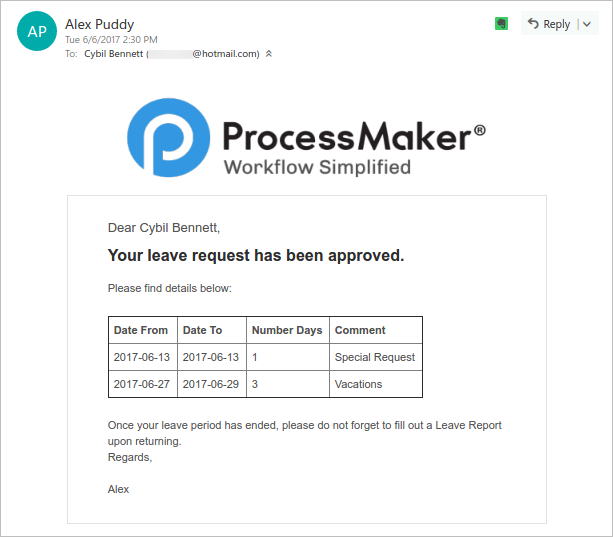
To download the example template, click here.
Accessing Templates
Unlike public files, templates can not be directly accessed using a URL in the server to view the content of the template. Instead, templates are used inside different elements available in the project to send notifications. Templates are used in the following situations when working in a process:
- Task Properties: Templates are used in the Notifications property of the tasks to send a notification to the user(s) assigned to the next task in a case or to the user assigned to the current task. To access this property, right click on a task to access its context menu and select the Properties option.
Once inside this option, check the After routing notify the next assigned user box and/or the Notify the assigned user to this task box, then write the subject of the email in the Subject field. In the Content Type field, select the option HTML Template and a dropdown list of already created templates will appear next to the Template field.

- Triggers: Templates are used in the PMFSendMessage() function, which is used to send out customized email notifications based on a template file. To use this function, create a Trigger and add this function to the code of that trigger.
- Actions By Email (for the Enterprise Edition): Templates are used by Actions by Email in the Enterprise Edition, which allows users to receive an email where they can send information to ProcessMaker cases and also route those cases onto the next task in the process.
Template File Storage
Templates are stored on the ProcessMaker server in the following path:
INSTALL-DIRECTORY/shared/sites/WORKSPACE/mailTemplates/PROJECT_UID/TEMPLATE_FILE
For example, a template file named "notifyUser.html" might be found in the following locations:
Linux/UNIX:
/opt/processmaker/shared/sites/workflow/mailTemplates/58038459456cf8d46c99432086930679/notifyUser.html
Windows (Bitnami Installer between versions 3.0.1.8 and 3.3.X):
C:\Bitnami\processmaker-3.X.X\apps\processmaker\shared\sites\workflow\mailTemplates\58038459456cf8d46c99432086930679\notifyUser.html
Windows (Automatic Installer in version 3.0.1.7 or earlier):
C:\Users\USERNAME\AppData\Roaming\ProcessMaker-3_X_X\processmaker\shared\sites\workflow\mailTemplates\58038459456cf8d46c99432086930679\notifyUser.html
Note that AppData is a hidden directory, which the Windows File Explorer can be configured to display.
The PROJECT_UID can be found with the @@PROCESS system variable in a trigger or in the debugger when running a case. It can also be found with the following SQL query in the wf_WORKSPACE database:
Note: A project in ProcessMaker is a map that can hold multiple processes, but ProcessMaker basically treats them as the same thing inside its database, so a PROJECT_UID is the same as a PROCESS_UID.
Using Templates in Triggers
The PMFSendMessage() function can be used to send out an email that is based on a template file.
For example, the following trigger sends out an email that is based on the "notifyUser.html" template file:
To send a template file as an attachment to an email, then the full path to the template file on the ProcessMaker server should be used. To construct the path to the template, it is recommended to use the defined constant PATH_DATA_MAILTEMPLATES (which has a value such as '/opt/processmaker/shared/sites/workflow/mailTemplates/), the @@PROCESS system variable, and PATH_SEP (which has a value of '/' or '\', depending on the server's operating system).
For example, this trigger sends two template files as attachments in an email to the currently logged in user. One of the templates is stored in the current project, but another one stored in a different project whose ID has to be looked up in the CONTENT table with an SQL query.
$res = executeQuery("SELECT CON_ID FROM CONTENT WHERE CON_VALUE='$projectName'");
if (is_array($res) and count($res) > 0) {
$projectId = $res[1]['CON_ID'];
$aAttachFiles = array(
PATH_DATA_MAILTEMPLATES . $projectId . PATH_SEP . 'productSpec.html',
PATH_DATA_MAILTEMPLATES . @@PROCESS . PATH_SEP . 'productComments.html'
);
$usr = userInfo(@@USER_LOGGED);
PMFSendMessage(@@APPLICATION, 'manager@acme.com', $usr['mail'], '', '',
'Purchase Information', 'purchaseOrderForm.html', array(), $aAttachFiles);
}
Routing Screen Template
A template can be used as a routing screen template for a process or for a particular task.
This feature was originally created for the User Experience interface. In the case an external user doesn't need to know who the user(s) assigned to the next case or the next task will be, a customized template can be used to hide this information. This option can also be applied to the normal ProcessMaker interface.
A default routing screen template looks like this:
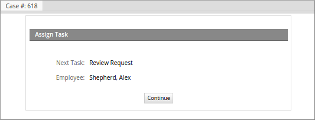
Users can create their own template using the ProcessMaker default routing screen template file, cases_ScreenDerivation.html, located at:
<INSTALL-DIRECTORY>/processmaker/workflow/engine/template/cases/cases_ScreenDerivation.html
The cases_ScreenDerivation.html file also contains variables that are extracted from ProcessMaker variables. Once the new template is created, it's not necessary to save it in the above file path. It can be uploaded directly through the Templates option in the main toolbox.
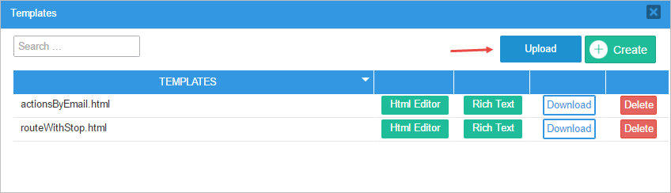
A template created to be used as a routing screen template must be edited with the Html Editor. Be careful to NOT edit the template with the Rich Text editor because the original code may become corrupt due to certain limitations of the editor.
To assign the new template to a process, open a process and right click on a blank space in the Process Map, select Edit Process and choose the new template in the Routing Screen Template property.

To assign the new template to a particular task, right click on the task, select Properties in the menu displayed and choose the new template in the Routing Screen Template property.
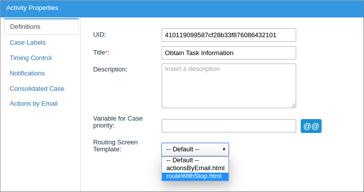
For instance, if it is not necessary to show information about the next task and the user assigned to it, modify the template to something like:

In the case it is necessary to show an additional message to the user, create a new template adding a specific message, such as:
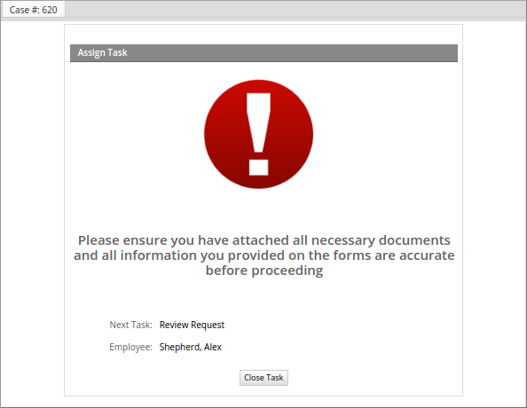
A piece of the HTML code used for the template shown above is as follows:
<tr>
{if $PROCESS.ERROR eq '' && $PROCESS.ROU_TYPE neq 'SELECT' && $PROCESS.ROU_FINISH_FLAG }
<td class='FormTitle' colspan="2" align="">{$END_OF_PROCESS}</td>
{else}
<td class='FormTitle' colspan="2" align="">{$ASSIGN_TASK}</td>
{/if}
</tr>
<tr>
<td style="text-align: center" colspan="2"><img src="../2410651855744c04c56e721060945387/alert-icon-1567.png"></td>
</tr>
<tr>
<td style="text-align: center" colspan="2"><h2>Please ensure you have attached all necessary documents and all information you provided on the forms are accurate before proceeding</h2></td>
</tr>
{foreach key=id item=data from=$TASK}
<tr height="5">
<td> </td>
<td> </td>
</tr>
{if $PROCESS.ROU_TYPE eq 'SELECT'}
<form name="frmDerivation{$id}" id="frmDerivation{$id}" action="cases_Derivate" method="POST" class="formDefault" method="post" style="margin: 0px;"><input type="hidden" name="form[ROU_TYPE]" id="form[ROU_TYPE]" value="{$PROCESS.ROU_TYPE}">
<tr>
<td class="FormLabel" width="100">{$OPTION_LABEL} {$id}:</td>
<td class="FormFieldContent">{$data.ROU_CONDITION }</td>
</tr>
{/if}
...